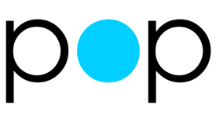

In April 2014, Facebook engineer Kimon Tsinteris announced Pop, the spring animation framework that Facebook built to power their app Paper. The origin of the framework actually predates Facebook, however, as Kimon built much of it for his e-book company Push Pop Press which Facebook acquired in 2011. You might remember Push Pop Press from their Apple Design Award-winning iPad e-book they built for Al Gore named “Our Choice.”
“Our Choice” was truly groundbreaking in 2011. It was one of the first iOS apps to have a fully gesture-based, chrome-less interface for manipulating the content. Every visual element on the screen was spring animated and wonderfully bouncy and responsive, like no one had ever seen up to that point.
Fast forward to early 2014 and the introduction to Facebook Paper. Paper also incorporated gesture-based controls and spring animations, and come to find out, it was all based on the work on Al Gore’s e-book from 3 years prior. And lucky for us developers, Facebook thought their animation framework Pop was worth giving away to the community so others could build cool, spring animation-based apps as well.
When we talked about Core Animation earlier in this guide, and how it works at a fundamental level, I explained the difference between the model layer and the presentation layer. The model layer represents the known, true properties of a CALayer prior to adding an animation to it. If you add an animation to a layer and half-way through the animation ask the model layer what its properties are, the answer won’t reflect any of the animation that’s currently attached to it. If you want to know the live, in-flight values of a layer during its animation, you have to look at the presentation layer. And the presentation layer goes away once the animation is completed, so if you don’t want your layer to jerk back to the starting position, you need to then set the model layer’s properties to match the final state of the animation.
This is just how Core Animation works. It’s a fundamental implementation choice that Apple made a number of years ago when figuring out how to build an animation framework for the iPhone. And since JNWSpringAnimation simply generates a CAKeyframeAnimation for us, that’s still a Core Animation object and we still need to set the final value on the model layer for the animation to “stick” once it’s completed.
Pop is completely different!
Pop doesn’t use Core Animation to execute any of the animation functionality that it provides. What it does instead is set up a special timer object that fires every 1/60th of a second. The code that the timer calls 60 times per second will directly update whatever property you want based on the next position in a spring motion you define. There’s no special, extra layer that gets added to your element, Pop directly changes properties on a UIView or CALayer, or, interestingly, on any type of object you want. That means at any time during an animation, you can get direct access to the changing property’s current value without jumping through any presentation layer hoops. And, even nicer, you don’t have to separately set the final value to make the animation stick around because the animation is always working on the actual, real value.
The timer object that Pop uses to power the entire framework is CADisplayLink which could be considered a more advanced version of NSTimer which Mac game developers have used for years to fire off code frame by frame by frame in their Mac and iOS games. NSTimer will call whatever code you want at any time you want, repeating over and over or just once. If you want to call code every 5 seconds you could use NSTimer to do it. And if you want to call code 60 times per second, you could use NSTimer to do it as well, however, when calling code that quickly (to step an interface element forward a tiny number of pixels to power an animation, for example) the timer object is likely to get out of sync with the exact refresh rate of the display and you could miss a frame update here and there and cause nasty jumps once in awhile.
That’s where CADisplayLink comes in. CADisplayLink was designed to avoid this problem because instead of setting a time interval, the speed at which it calls your methods over and over is completely determined by the screen’s refresh rate. It fires your code in lock-step with the screen refreshing so you have the best chance to update your interface 60 times per second (the time in which smooth motion is perceived). This is what Pop uses to push animations forward pixel by pixel by pixel, every 1/60th of a second.
Let’s get into some simple Pop animations and walk through how it works.
// Add our red ball to the interface
UIView *redBall = [[UIView alloc] initWithFrame:CGRectMake(300, 300, 75, 75)];
redBall.backgroundColor = [UIColor redColor];
redBall.layer.cornerRadius = 75/2; // Half the width
[self.window addSubview:redBall];
POPSpringAnimation *scale =
[POPSpringAnimation animationWithPropertyNamed:kPOPViewScaleXY];
scale.toValue = [NSValue valueWithCGPoint:CGPointMake(2, 2)];
scale.springBounciness = 20.0f; // Between 0-20
scale.springSpeed = 1.0f; // Between 0-20
[redBall pop_addAnimation:scale forKey:@"scale"];
Here’s the animation that this code produces.
Springy! Obviously we’ve talked a lot about how to create spring animations using JNWSpringAnimation and Core Animation, but let’s walk through Pop’s approach.
POPSpringAnimation *scale =
[POPSpringAnimation animationWithPropertyNamed:kPOPViewScaleXY];
scale.toValue = [NSValue valueWithCGPoint:CGPointMake(2, 2)];
scale.springBounciness = 20.0f; // Between 0-20
scale.springSpeed = 1.0f; // Between 0-20
[redBall pop_addAnimation:scale forKey:@"scaleAnimation"];
First, we created a new POPSpringAnimation object. Its designated initializer is the +animationWithPropertyNamed: method which takes in a value that tells Pop what property you want to animate. This is very similar to the key path value we plugged into JNWSpringAnimation, but instead of a simple string, Pop has defined a number of these values so you don’t have to remember the string. Here’s a small samping of the properties that Pop can animate right out of the box.
kPOPViewAlpha — The opacity of a viewkPOPViewFrame — The overall frame of a viewkPOPViewScaleXY — The scale (both X and Y axis) of a viewkPOPViewBackgroundColor — The background color of a viewkPOPLayerCornerRadius — The corner radius of a layerkPOPLayerRotation — The rotation of a layerkPOPLayerShadowRadius — The size of a layer’s drop shadowThe full list of all properties can be found on Pop’s GitHub repo. It’s a huuuuge list and is increasing all the time thanks to developer contributions.
You might have noticed something interesting about the way these properties are named. We have a property like kPOPViewAlpha and then another named kPOPLayerRotation. What’s cool about Pop is that based on the property you pass in, you can manipulate either a UIView’s properties or or a CALayer’s properties. It’s totally up to you, you just need to let Pop know which of the huge list of properties it supports is the one you want to animate, whether it’s a view property, a layer property, or actually, any other type of property. Pop lets you update any type of variable you want, even ones that have nothing to do with interface animation.
We’re setting the toValue to [NSValue valueWithCGPoint:CGPointMake(2, 2)] which might seem a little odd. Why do we have to wrap up the {2, 2} point (our X and Y scale) into a NSValue object? Well, this is just how Pop works, it’s expecting certain types of values being piped into the toValue property. And the type of value depends on the type of animation we’re adding. It’s always expecting an object, and in this case, it wants a CGPoint wrapped into an NSValue object. This aspect of Pop is a little opaque in the documentation unfortunately, but it’s getting better all the time due to developer contributions.
As far as the fromValue is concerned, we’re not setting it in this example because Pop does something cool: if you don’t set it, it automatially figures out the current starting value and just goes from there. Pretty nice!
Just like with JNWSpringAnimation, you can tweak the properties of the spring motion you want to emulate. Here are the relevant parts of the earlier example.
scale.springBounciness = 20.0f; // Between 0-20 scale.springSpeed = 1.0f; // Between 0-20
Pop lets you tweak the bounciness of the spring and also its speed. Each value goes from 0 to 20. Just like with the new block-based spring animations baked into iOS 7, these values are interpreted with the true values piped into the motion equation being derived from these two 0-20 values. Unlike iOS 7, however, I think Pop does an excellent job in the way they interpret these values and I’ve yet to generate a spring motion using Pop that seemed unnatural or against the laws of physics.
If you want to tweak the raw values that the motion equation uses, you can dive down into a deeper level and manipulate them as well.
scale.dynamicsFriction = 20; scale.dynamicsMass = 1; scale.dynamicsTension = 300;
These values are similar to the values that drive JNWSpringAnimation, but not exactly the same, so if you want to port a JNWSpringAnimation precisely over to Pop, you’re going to have to tweak it a bit. Fortunately, the springBounciness and springSpeed interpreted values do a nice job of controlling the motion of the spring so I usually just stick to them.
Let’s take a look at how adjusting the bounciness values can impact the animation.
All three balls have a speed of 10. The red ball has a bounciness of 5, the blue ball has a bounciness of 12 and the green ball has a bounciness of 20.
Finally, we add the animation to the object we want to animate.
[redBall pop_addAnimation:scale forKey:@"scaleAnimation"];
We call the method -pop_addAnimation:forKey: on the view and pass in the animation object to pop_addAnimation:, then we pass in "scale" to forKey:. Unlike JNWSpringAnimation and other Core Animation, the key that we’re passing in doesn’t have to match up with the property that we’re animating. The key is just a unique name for this animation on the view, it can be anything you want. If you want to access an animation while it’s running, you can ask a view or layer for the Pop animation based on the key and that’s how it’s used.
Now let’s add a few different animations at once, all animating different properties. Before we show the code for it, here’s what it looks like.
This animation is doing 4 things: it’s scaling up the view, it’s moving it over to the right, it’s rotating it, and it’s also changing the background color. These are 4 separate animations that we’re adding, and there are 4 separate animation objects, each representing a different animation.
POPSpringAnimation *scale =
[POPSpringAnimation animationWithPropertyNamed:kPOPViewScaleXY];
scale.toValue = [NSValue valueWithCGPoint:CGPointMake(1.5, 1.5)];
scale.springBounciness = 15;
scale.springSpeed = 5.0f;
[orangeSquare pop_addAnimation:scale forKey:@"scale"];
POPSpringAnimation *move =
[POPSpringAnimation animationWithPropertyNamed:kPOPLayerPositionX];
move.toValue = @(500);
move.springBounciness = 15;
move.springSpeed = 5.0f;
[orangeSquare.layer pop_addAnimation:move forKey:@"position"];
POPSpringAnimation *spin =
[POPSpringAnimation animationWithPropertyNamed:kPOPLayerRotation];
spin.toValue = @(M_PI*4);
spin.springBounciness = 15;
spin.springSpeed = 5.0f;
[orangeSquare.layer pop_addAnimation:spin forKey:@"spin"];
POPSpringAnimation *color =
[POPSpringAnimation animationWithPropertyNamed:kPOPViewBackgroundColor];
color.toValue = [UIColor greenColor];
color.springBounciness = 15;
color.springSpeed = 5.0f;
[orangeSquare pop_addAnimation:color forKey:@"colorChange"];
We’re using animations that are operating on the following properties: kPOPViewScaleXY, kPOPLayerPositionX, kPOPLayerRotation, kPOPViewBackgroundColor. That’s 2 animations attached to the view, and 2 animations attached to the layer.
If you take a look at the various toValues that we’re setting to be the final value, you might see a few different ways that we set it. Like I mentioned before, an interesting (slightly annoying?) aspect of Pop is that the value that Pop is expecting for the toValue changes depending on the property you’re animating. For the scale, we already walked through that it wants an NSValue object. For the X position animation, we can just use the Objective-C shortcut @(500) to easily turn the value 500 into an object. For the rotation, we’re doing the same thing with the special @() syntax. For the color we’re assigning it to a UIColor object. So you can see that because Pop supports so many different animatable properties, there are some nuances that have to be understood. I’ve messed up the NSValue wrapping of a CGPoint and stared at my code wide-eyed for 30 seconds before realizing it’s expecting something different.
Time to use Pop to build some cool stuff.
Have you ever played Loren Brichter’s game Letterpress? One thing I really love about the interface that Loren built is probably not the most obvious thing that everyone else loves: I love how every button switches to a different visual state immediately as a user presses down. There’s absolutely no lag. This is actually a not-so-straightforward behavior to implement, because although you can swap out an image or background image on a UIButton on the state UIControlStateHighlighted, that actually doesn’t fire until a split-second after the tap begins, and it doesn’t allow further code to be ran. If I want to run an animation immediately when a user taps on a UIButton, I’m going to have to write myself a simple, custom button class. But first, let’s take a look at what we’re about to build. You can follow along in the Pop Tapped Button Xcode project.
If I want to have code immediately executed as the user presses down, I’m going to have to make myself a nice UIButton subclass so I can override some methods, namely, -touchesBegan:withEvent: and -touchesEnded:withEvent:. Every interface control in iOS (buttons, sliders, switches, etc.) inherits these methods from UIResponder, the master parent class that handles all touch events for controls. With a subclass, I can jam in my own code to be executed when those methods fire. Let’s take a look at the implementation file for DTCTestButton, our button subclass that will handle some magic for us.
#import "DTCTestButton.h"
#import "POP.h"
@implementation DTCTestButton
- (void)touchesBegan:(NSSet *)touches withEvent:(UIEvent *)event {
// Custom code goes here for when the button is first pressed
[super touchesBegan:touches withEvent:event];
}
- (void)touchesEnded:(NSSet *)touches withEvent:(UIEvent *)event {
// Custom code goes here for when the button is no longer pressed
[super touchesEnded:touches withEvent:event];
}
@end
We’re only defining 2 methods in here, the ones we want to plug our own code into. When subclassing an Apple-provided object, like UIButton, it’s important to be a good citizen and make sure to call super’s implementation of this same method because we don’t know what kinds of fancy code Apple needs to run in these 2 methods and we don’t want to bork the default behavior of a button. Once we call super, we can then plug in whatever behaviors we want in these 2 methods.
Let’s start by adding a Pop animation in -touchesBegan:withEvent:.
POPSpringAnimation *scale = [self pop_animationForKey:@"scale"];
if (scale) {
scale.toValue = [NSValue valueWithCGPoint:CGPointMake(0.8, 0.8)];
} else {
scale = [POPSpringAnimation animationWithPropertyNamed:kPOPViewScaleXY];
scale.toValue = [NSValue valueWithCGPoint:CGPointMake(0.8, 0.8)];
scale.springBounciness = 20;
scale.springSpeed = 18.0f;
[self pop_addAnimation:scale forKey:@"scale"];
}
This is a little different than the Pop code we walked through before. When using Pop to build nice, responsive animations tied to touch actions, a smart thing to do is to see if there is already a Pop animation tied to this view or layer. If there is, just update the existing animation’s toValue property and you’re all set. Pop knows what the current value is and still has the bounciness and speed variables set, so you don’t have to do anything else. This avoids the mistake of adding another Pop animation operating on the same value (in this case, kPOPViewScaleXY) which will have goofy consequences. Also, by using the existing, current animation, Pop can interpolate it really nicely from its current position to the new toValue you're setting and make it a beautiful, smooth transition. This is also why Pop animations have a name: so that you can ask the view or layer if they have a Pop animation already added to them by giving them the name of the animation you originally set and getting the animation object back.
If the animation doesn’t already exist, then we create a new Pop animation object like normal, set the spring’s motion properties like bounciness, set the toValue, and then add the animation to the view or layer. In this case, we’re animating the view’s scale, so we add this animation to the view.
Now let’s do the same thing for when a touch event ends. This code goes in -touchesEnded:withEvent:
POPSpringAnimation *scale = [self pop_animationForKey:@"scale"];
if (scale) {
scale.toValue = [NSValue valueWithCGPoint:CGPointMake(1.0, 1.0)];
} else {
scale = [POPSpringAnimation animationWithPropertyNamed:kPOPViewScaleXY];
scale.toValue = [NSValue valueWithCGPoint:CGPointMake(1.0, 1.0)];
scale.springBounciness = 20;
scale.springSpeed = 18.0f;
[self pop_addAnimation:scale forKey:@"scale"];
}
If you take a look at the toValue of 0.8 when the touch event first begins, and the toValue of 1.0 when the touch ends, you can probably guess that the overall animation will be shrinking the button in size just a bit when the user taps on the button, and then will bounce it back to full size when they let go of the touch. And you’d be right! Here’s what it looks like right now.
Fun! Let’s spice this up with a little more animation by adding in a slight rotation as well. It’s nearly the exact same code as what we already added, we just double it up, change the animation type, and change the toValue. Here’s the full code, all together, with some explanatory comments throughout.
// Called as soon as the user starts to tap
- (void)touchesBegan:(NSSet *)touches withEvent:(UIEvent *)event {
// See if either animation is already added to the view or the layer
POPSpringAnimation *scale = [self pop_animationForKey:@"scale"];
POPSpringAnimation *rotate = [self.layer pop_animationForKey:@"rotate"];
// If the scale animation exists, just set the toValue
if (scale) {
scale.toValue = [NSValue valueWithCGPoint:CGPointMake(0.8, 0.8)];
} else {
// If it doesn’t, create it and add it
scale = [POPSpringAnimation animationWithPropertyNamed:kPOPViewScaleXY];
scale.toValue = [NSValue valueWithCGPoint:CGPointMake(0.8, 0.8)];
scale.springBounciness = 20;
scale.springSpeed = 18.0f;
[self pop_addAnimation:scale forKey:@"scale"];
}
// If the rotation animation exists, just set the toValue
if (rotate) {
rotate.toValue = @(M_PI/6); // Rotate to 1/6th π radians
} else {
// The rotation animation is on the layer so we add it to the layer down below
rotate = [POPSpringAnimation animationWithPropertyNamed:kPOPLayerRotation];
rotate.toValue = @(M_PI/6);
rotate.springBounciness = 20;
rotate.springSpeed = 18.0f;
// Add it to the layer, not the view
[self.layer pop_addAnimation:rotate forKey:@"rotate"];
}
[super touchesBegan:touches withEvent:event];
}
// Called as soon as the user lifts their finger
- (void)touchesEnded:(NSSet *)touches withEvent:(UIEvent *)event {
// See if either animation exists (since this is when the user releases, it
// most surely will already exist.)
POPSpringAnimation *scale = [self pop_animationForKey:@"scale"];
POPSpringAnimation *rotate = [self pop_animationForKey:@"rotate"];
if (scale) {
// Scale it back to 1.0 which is full size
scale.toValue = [NSValue valueWithCGPoint:CGPointMake(1.0, 1.0)];
} else {
scale = [POPSpringAnimation animationWithPropertyNamed:kPOPViewScaleXY];
scale.toValue = [NSValue valueWithCGPoint:CGPointMake(1.0, 1.0)];
scale.springBounciness = 20;
scale.springSpeed = 18.0f;
[self pop_addAnimation:scale forKey:@"scale"];
}
if (rotate) {
// Rotate it back to 0 radians which is the normal position
rotate.toValue = @(0);
} else {
rotate = [POPSpringAnimation animationWithPropertyNamed:kPOPLayerRotation];
rotate.toValue = @(0);
rotate.springBounciness = 20;
rotate.springSpeed = 18.0f;
// Again, make sure to add your layer animation to the layer. I’ve messed
// this up a few times and it makes for a fun bug to try and find :)
[self.layer pop_addAnimation:rotate forKey:@"rotate"];
}
[super touchesEnded:touches withEvent:event];
}
Animation code is repetitive. Straightforward, but repetitive. The bad thing about this is it takes a decent number of lines of code to fully build out your animations, but the good thing is it gets you in the practice of writing lots of animation code so I think that you can learn it more quickly.
Once again, here’s the final animation we just built. It’s such a fun effect and since it fires immediately as the user taps down on a button, it really makes your interface feel responsive and quick. The bounce effect shown here is pretty pronounced, so when adding animations to your interface, to your real app, make sure to actually use the app for awhile with the animations and make sure that their speed and motion are appropriate and not distracting.
Now let’s build some more fun stuff with Pop!
The hamburger button and slide-out menu might be the most polarizing set of interface elements in the whole industry. Apple evangelists have come out against the hamburger button and the corresponding slide-out menu, saying that designers (and engineers, and product managers, and CEOs) love to jam as many things in there as they possibly can, because, hey, you’ve got a lot of vertical space to work with.
I can’t say I disagree, because user testing has shown that users really don’t use slide-out menus that much, but maybe I’m a big hypocrite because I actually use a hamburger-basement menu combo in my iPhone app Interesting so it seems I’m part of the problem! Regardless, if you’re going to use a hamburger button, you might as well make it fun and delightful to tap on.
So what are the basic elements of a hamburger button? You typically have the three, horizontal bars depicting the normal state, and then if you want to get fancy, you can swap out the bars for an X once the menu is open. Of course, Pop is made to let user interface developers get fancy so why not add some animation to this transition?
Let’s take a peek at what we’re going to build. You can follow along by opening the Pop Hamburger Button Xcode project.
To start, we have a simple round, black button with the “hamburger” lines in the middle of it. As soon as the button is tapped, it animates to a slightly smaller scale. When the tap is released, the lines animate to form a red X. When tapped in this X state, the animations are reversed to get back to the original color and position. This is an overly simplistic explanation of what’s happening, so let’s get into the code.
// Add the main hamburger button to the screen
self.hamburgerButton = [DTCTestButton buttonWithType:UIButtonTypeCustom];
[self.hamburgerButton addTarget:self action:@selector(didTapHamburgerButton:)
forControlEvents:UIControlEventTouchUpInside];
self.hamburgerButton.backgroundColor = [UIColor blackColor];
[self.hamburgerButton setFrame:CGRectMake(200, 200, 150, 150)];
self.hamburgerButton.layer.cornerRadius = 75;
[self.window addSubview:self.hamburgerButton];
We’re setting up our main hamburger button which happens to be a @property on the class so we are referring to it as self.hamburgerButton. It’s using the same button sub-class that we created in the previous example to give us the nice, bouncy feel as soon as the user taps down on it. We’re also setting up the button to call our method -didTapHamburgerButton: on the event UIControlEventTouchUpInside which is a funny term for when the user releases their tap on the button. We’re also making the button black and have rounded corners.
Here’s what we have at this point.
Time to add our hamburger lines as subviews on the button.
CGFloat sectionWidth = 80;
CGFloat sectionHeight = 11;
// Add the top, middle and bottom hamburger pieces
self.top = [[UIView alloc] initWithFrame:
CGRectMake(self.hamburgerButton.bounds.size.width/2 - sectionWidth/2,
40, sectionWidth, sectionHeight)];
self.top.backgroundColor = [UIColor whiteColor];
self.top.userInteractionEnabled = NO;
self.top.layer.cornerRadius = sectionHeight/2;
[self.hamburgerButton addSubview:self.top];
self.middle = [[UIView alloc] initWithFrame:
CGRectMake(self.hamburgerButton.bounds.size.width/2 - sectionWidth/2,
69, sectionWidth, sectionHeight)];
self.middle.backgroundColor = [UIColor whiteColor];
self.middle.userInteractionEnabled = NO;
self.middle.layer.cornerRadius = sectionHeight/2;
[self.hamburgerButton addSubview:self.middle];
self.bottom = [[UIView alloc] initWithFrame:
CGRectMake(self.hamburgerButton.bounds.size.width/2 - sectionWidth/2,
99, sectionWidth, sectionHeight)];
self.bottom.backgroundColor = [UIColor whiteColor];
self.bottom.userInteractionEnabled = NO;
self.bottom.layer.cornerRadius = sectionHeight/2;
[self.hamburgerButton addSubview:self.bottom];
I’ve set some CGFloat variables for numbers we’ll be reusing a bunch in this code. I’ve added 3 UIView objects to the main hamburger button, each with rounded corners and a background color of white. They are positioned horizontally centered within the larger hamburger button and then spaced out vertically. The most interesting part of this code is when I set the userInteractionEnabled property to NO for each of these views. If we don’t do that, these views, if tapped directly on within the button, will swallow up the touch event and not pass it up to the actual, full hamburger button. Here’s what it looks like now.
Now without any additional code, because this overall button is a DTCTestButton, our special UIButton subclass we built in the previous example, it already has some animation to it.
What we really want to do now is animate the lines to cross and form an X. So let’s dive into our didTapHamburgerButton: method which is called every time we tap this button, and take a look at what we’re going to do.
- (void)didTapHamburgerButton:(id)sender {
if (self.hamburgerOpen) {
self.hamburgerOpen = NO;
// Add animations for changing the X back to three lines
} else {
self.hamburgerOpen = YES;
// Add animations for changing the three lines to an X
}
}
We need a way to keep track of if the button has been animated to an X or not (aka, if the slide out menu has been pushed open if this were a full app) so I added a @property (BOOL) hamburgerOpen to the class so we can set it each time and know which state the button is in. This is the variable that we need to check before we do anything in this method, because its value will dictate what type of animation we need to perform.
Let’s start with the initial state, which is when self.hamburgerOpen is false and the code is following the else path from above. Before getting into the actual code, let’s hash out a plan to turn these 3 horizontal lines into a red X.
If you’re paying attention at home, you might realize that we have a bunch of animations to perform, and you’re right. This isn’t a trivial example, it’s made up of a number of separate animations, but like pretty much all animation code, it’s straightforward and step-by-step. We still write one animation block at a time, except this example has a bunch of them! Let’s start out with fading out the middle line.
// Fade out the center line
[UIView animateWithDuration:0.2 animations:^{
self.middle.alpha = 0.0f;
}];
Just a simple block-based UIView animation. The entire goal of this fade animation is to get the middle line out of the way, so we don’t have to do anything fancy here. Oh, and I should note that we have the top, middle and bottom lines as @propertys on the class as well, that’s why we’re accessing this variable with a self. prefix.
Next, let’s animate the color of our 2 remaining lines from white to red. Fortunately, Pop makes that really easy and you just need to set the toValue to the color you want to end up with and it’ll interpolate the colors in between automatically.
// Change the color of the top and bottom lines to red
POPSpringAnimation *topColor = [self.top pop_animationForKey:@"topColor"];
if (topColor) {
topColor.toValue = [UIColor redColor];
} else {
topColor =
[POPSpringAnimation animationWithPropertyNamed:kPOPViewBackgroundColor];
topColor.toValue = [UIColor redColor];
topColor.springBounciness = 0;
topColor.springSpeed = 18.0f;
[self.top pop_addAnimation:topColor forKey:@"topColor"];
}
POPSpringAnimation *bottomColor = [self.bottom pop_animationForKey:@"bottomColor"];
if (bottomColor) {
bottomColor.toValue = [UIColor redColor];
} else {
bottomColor =
[POPSpringAnimation animationWithPropertyNamed:kPOPViewBackgroundColor];
bottomColor.toValue = [UIColor redColor];
bottomColor.springBounciness = 0;
bottomColor.springSpeed = 18.0f;
[self.bottom pop_addAnimation:bottomColor forKey:@"bottomColor"];
}
Just like with our previous button example, when we’re reacting to a user action, we need to make sure that our animation is fluid even if the user goes crazy and taps the button 20 times in a row very quickly and interrupts our animation. It’s important to start the animation from the current value so nothing jerks around. This is why we do a check to see if the topColor and bottomColor animation objects already exist before creating and adding new ones. If they exist, we use the existing animation and just set an updated toValue, if not, then we construct new animation objects. Also, I’m not using any bounciness for this color transition as I definitely don’t want the color animation to “overshoot” red and get to some odd color.
At this point we don’t have an X when the user taps the button, but we do have this lovely visual.
We just have 2 animation sequences left, but they’re big ones and require a little bit of thinking. We need to rotate the top line 45° clockwise (so the right side slants down) and then we need to rotate the bottom line 45° counterclockwise (so the right side slants up). Counterclockwise rotation means we need to rotate a negative value, so that will be -45°. Of course, animations don’t take in degree values, they need radian values, and 45° in radians is π/4. Let’s do some rotation animations.
// Rotate the top bar to form an X
POPSpringAnimation *topRotate =
[self.top.layer pop_animationForKey:@"topRotate"];
if (topRotate) {
topRotate.toValue = @(-M_PI/4);
} else {
topRotate =
[POPSpringAnimation animationWithPropertyNamed:kPOPLayerRotation];
topRotate.toValue = @(-M_PI/4);
topRotate.springBounciness = 11;
topRotate.springSpeed = 18.0f;
[self.top.layer pop_addAnimation:topRotate forKey:@"topRotate"];
}
// Rotate the bottom bar to form an X
POPSpringAnimation *bottomRotate =
[self.bottom.layer pop_animationForKey:@"bottomRotate"];
if (bottomRotate) {
bottomRotate.toValue = @(M_PI/4);
} else {
bottomRotate =
[POPSpringAnimation animationWithPropertyNamed:kPOPLayerRotation];
bottomRotate.toValue = @(M_PI/4);
bottomRotate.springBounciness = 11;
bottomRotate.springSpeed = 18.0f;
[self.bottom.layer pop_addAnimation:bottomRotate forKey:@"bottomRotate"];
}
Pop rotation animations operate on layers (see the property kPOPLayerRotation?) so we’re adding the animations to the layer that underpins each of these views.
We’re rotating one line down and one line up so they should cross nicely in the middle, right? Let’s see what we have at this point.
Hmm, intuitively, that might not be what you expected. The reason those rotation animations made the lines look like this is that each line is rotating around the center of the layer which is a point right smack in the middle. So these views are rotating like a teeter-totter, which isn’t what we want since we want them to cross in the middle. We could change the anchor point on the layer about which rotations take place, but that’s a bit of a pain because doing so will reposition the layer and we have to adjust the frame and it’s just a hassle. So, easier than doing that, we can just move the top line down a bit, and the bottom line up a bit, and overlap them that way.
// Re-position the top bar to be in the middle of the button
POPSpringAnimation *topPosition =
[self.top.layer pop_animationForKey:@"topPosition"];
if (topPosition) {
topPosition.toValue = @(29);
} else {
topPosition =
[POPSpringAnimation animationWithPropertyNamed:kPOPLayerTranslationY];
topPosition.toValue = @(29);
topPosition.springBounciness = 0;
topPosition.springSpeed = 18.0f;
[self.top.layer pop_addAnimation:topPosition forKey:@"topPosition"];
}
// Re-position the bototm bar to be in the middle of the button
POPSpringAnimation *bottomPosition =
[self.bottom.layer pop_animationForKey:@"bottomPosition"];
if (bottomPosition) {
bottomPosition.toValue = @(-29);
} else {
bottomPosition =
[POPSpringAnimation animationWithPropertyNamed:kPOPLayerTranslationY];
bottomPosition.toValue = @(-29);
bottomPosition.springBounciness = 0;
bottomPosition.springSpeed = 18.0f;
[self.bottom.layer pop_addAnimation:bottomPosition forKey:@"bottomPosition"];
}
After some trial and error I determined that moving the top bar down 29 pixels and the bottom bar up 29 pixels will make them overlap perfectly. You could have also done a little triangle geometry to arrive at that value. We’re attaching a kPOPLayerTranslationY animation to make the two rotated bars line up nicely as an X in the center of the button.
And we’re done! Right? Well, yes, when you tap on the button it will turn the 3 lines into 2 crossed lines, but what happens when the user taps on the button again? At this stage, nothing will happen, because we didn’t implement the other conditional branch of logic which is to turn the X back into the 3 crossed lines. Fortunately, this is pretty simple as we can copy and paste the animations to turn it into an X but adjust all the toValues to go back to normal. For example, we need to rotate both of the bars back to 0 radians, make sure to remove that 29 pixel translation change, and animate their color back to white. And we need to fade the middle bar back to 100% opacity. Then we’re all done, and we get a beautiful hamburger button that looks like this.
We’ve walked through iOS 7 spring animations, JNWSpringAnimation and Facebook Pop, so naturally you might be wondering which animation framework to use. Well there’s a reason I didn't just pick 1 method of animating things and solely focus on that, I wanted to provide a well-rounded overview of some of the different ways you can build animated, native interfaces for iOS.
In my apps, I tend to use all 3 of the frameworks I’ve highlighted for different purposes. If I’m just fading out a view very simply, I’ll typically use block-based UIView animations because they’re so few lines of code. If I’m doing an exponential decay type of animation (where something slowly, gradually moves towards its final value without bouncing) I like how the properties on JNWSpringAnimation feel when it derives its motion. For full-on spring motions, I’m usually split between JNWSpringAnimation and Pop, but have been leaning towards Pop more recently because I really like how it directly manipulates a view or layer’s properties without having to re-set the final value all the time.
When you build your own animations, you can choose whatever method works best for you. I hope that I’ve provided a good grounding in the various choices you have.
In this guide you’ve learned the core fundamentals of thinking about, designing and building animations. I remember when I was first getting into animation development and made my first object move across the screen, it totally blew my mind. It really changed me, and it changed how I worked. No longer was I just putting together static app mockups in Photoshop and then maybe doing a little bit of a clickable prototype in Keynote or in other tools, I was actually building interfaces that I could run on my phone! That was back in 2008, before the really cool spring animation frameworks came about, so those animations were just using simple easing movements. Now, it’s a totally different ballgame with iOS 7 and iOS 8, and the wonderful 3rd party animation frameworks like JNWSpringAnimation and Facebook Pop.
One final word of advice when designing and building your own animations: think about the purpose of the animation. Is it to focus the user’s attention? To transition between different visual states of the interface? Or just to delight the user with a fun motion? These are the questions that should drive your design, and ultimately, the exact types of animations and motions you implement in your apps.
Finally, thank you so much for purchasing and reading this guide. If you have any questions or comments, or want me to check out something cool you built and offer feedback, please feel free to message me on Twitter or email me directly.
Good luck!
–Mike